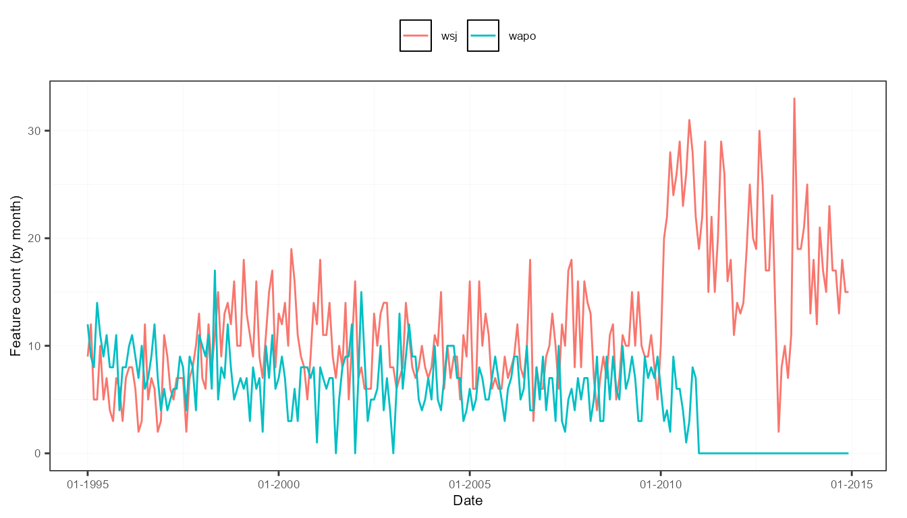

This tutorial provides insights in how to create, enrich, transform,
and analyze a sento_corpus object. A
sento_corpus object is special because it always has a date
column, and numeric metadata features.
Preparation
library("sentometrics")
library("quanteda")
data("usnews")
data("list_lexicons")
data("list_valence_shifters")Summarize a corpus through some statistics and plots
The corpus_summarize() function allows quickly
investigating how your corpus looks like in terms of number of
documents, number of tokens, and its metadata features. It can be done
at a daily, weekly, monthly, or yearly frequency, and for all the corpus
features or only a selection of them.
corpus <- sento_corpus(usnews)
summ <- corpus_summarize(corpus, by = "month", features = c("wsj", "wapo"))
stats <- summ[["stats"]]
plots <- summ[["plots"]]The summary consists of a statistics component…
stats## Key: <date>
## date documents totalTokens meanTokens minTokens maxTokens wsj
## <Date> <num> <num> <num> <num> <num> <num>
## 1: 1995-01-01 21 4322 205.8095 96 299 9
## 2: 1995-02-01 21 4425 210.7143 128 313 12
## 3: 1995-03-01 13 2792 214.7692 119 325 5
## 4: 1995-04-01 19 4086 215.0526 123 389 5
## 5: 1995-05-01 21 4348 207.0476 103 330 10
## ---
## 235: 2014-08-01 17 3369 198.1765 131 269 17
## 236: 2014-09-01 13 2528 194.4615 90 297 13
## 237: 2014-10-01 18 3665 203.6111 133 329 18
## 238: 2014-11-01 15 3222 214.8000 138 314 15
## 239: 2014-12-01 15 2581 172.0667 103 315 15
## wapo
## <num>
## 1: 12
## 2: 9
## 3: 8
## 4: 14
## 5: 11
## ---
## 235: 0
## 236: 0
## 237: 0
## 238: 0
## 239: 0… and a component with pregenerated graphs of the statistics.
plots$doc_plot # monthly evolution of the number of documents
plots$feature_plot # monthly evolution of the presence of the two journal features
plots$token_plot # monthly evolution of the token statistics
Apply quanteda corpus functions on a
sento_corpus object
It is also possible to apply the many corpus manipulation functions
of the quanteda package on a
sento_corpus object. In fact, the sento_corpus
object is built on quanteda’s
corpus object.
corpus <- sento_corpus(usnews)
res <- corpus_reshape(corpus, to = "sentences")
sam <- corpus_sample(corpus, 100)
seg <- corpus_segment(corpus, pattern = "stock", use_docvars = TRUE)
sub <- corpus_subset(corpus, wsj == 1)
tri <- corpus_trim(corpus, "documents", min_ntoken = 300)
trs <- corpus_trim(corpus, "sentences", min_ntoken = 40)Enrich a sento_corpus object with features
Using the add_features() function, additional features
can be added to your corpus, or generated through keywords or regex
pattern matching.
corpus <- sento_corpus(usnews[, 1:3])
kw <- list(
E = c("economy", "economic"),
P = c("polic.|Polic.|politi.|Politi."), # a regex pattern
U = c("uncertainty", "uncertain")
)
corpus <- add_features(corpus, keywords = kw, do.binary = TRUE, do.regex = c(FALSE, TRUE, FALSE))
docvars(corpus, "dummyFeature") <- NULL
head(docvars(corpus), 20)## date E P U
## 1 1995-01-02 0 0 0
## 2 1995-01-05 0 0 0
## 3 1995-01-05 1 0 0
## 4 1995-01-08 0 0 0
## 5 1995-01-09 0 0 0
## 6 1995-01-09 0 0 0
## 7 1995-01-10 0 0 0
## 8 1995-01-10 0 1 0
## 9 1995-01-11 1 0 0
## 10 1995-01-16 1 0 0
## 11 1995-01-18 1 0 0
## 12 1995-01-19 0 0 0
## 13 1995-01-19 0 1 0
## 14 1995-01-19 1 1 0
## 15 1995-01-20 0 1 0
## 16 1995-01-20 0 0 0
## 17 1995-01-20 0 1 0
## 18 1995-01-25 0 1 1
## 19 1995-01-26 1 1 0
## 20 1995-01-26 1 0 0